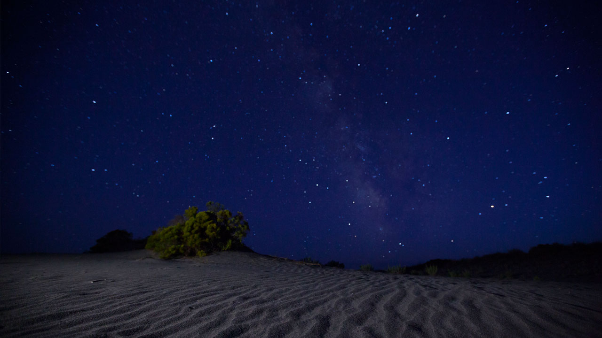
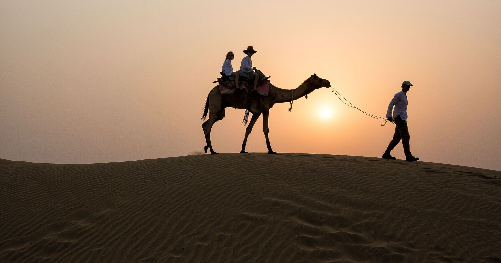
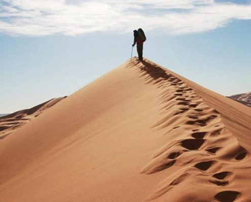
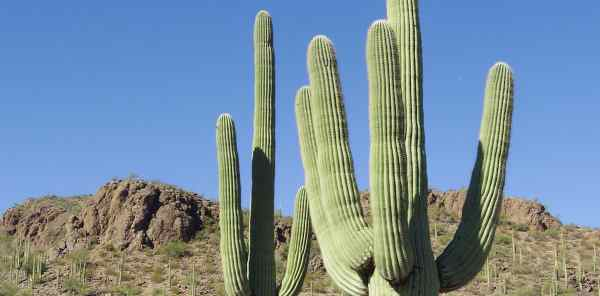

Hi today we explain about Desert.
A desert is a region of land that is very dry because it receives low amounts of precipitation (usually in the form of rain, but it may be snow, mist or fog), often has little coverage by plants, and in which streams dry up unless they are supplied by water from outside the area.

Also known as Great Indian Desert, this arid region covers about 92,200 square miles and is the seventh largest desert in the world. ... Although it borders the Indus to the west, Thar is a dry subtropical zone because the monsoons that carry the rain to the rest of India bypass this region.
What is the desert like at night?
At night, desert temperatures fall to an average of -3.9°C (about 25°F). At night, desert temperatures fall to an average of -3.9 degrees celsius (about 25 degrees fahrenheit).

Camels are a mammal of the Camelidae family. Camels form the genus Camelus. There are three living species of camels. Best-known are the dromedary (one hump) and bactrian (two humps) camels and There are two types of camels: One humped or “dromedary” camels and two humped Bactrian camels. ... Camels have three sets of eyelids and two rows of eyelashes to keep sand out of their eyes. Camels have thick lips which let them forage for thorny plants other animals can't eat.

What are sand dunes?
A dune is a mound of sand formed by the wind, usually along the beach or in a desert. Dunes form when wind blows sand into a sheltered area behind an obstacle. Dunes grow as grains of sand accumulate. Every dune has a windward side and a slipface.

What is a cactus
Word forms: plural cactuses , plural cacti (kæktaɪ ) countable noun. A cactus is a thick fleshy plant that grows in many hot, dry parts of the world. Cacti have no leaves and many of them are covered in prickles.

You can see a Video of Desert life.
Thank You.
website made by Priyangshu chanda class-7.